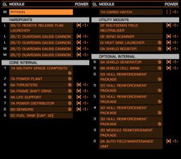

A ship build for the Python approved by A.X.I. detailing ship load out and engineering modifications. It is to be noted that the Shield Generator can be swapped for a Prismatic Generator.
Build Link: AX-Python

Note that power priorities should be set accordingly to your specific chosen module configuration
Python Wireframe with permission from Anthony Hunt - (elite-dangerous-blog) - Archive Link, as site no longer exists.